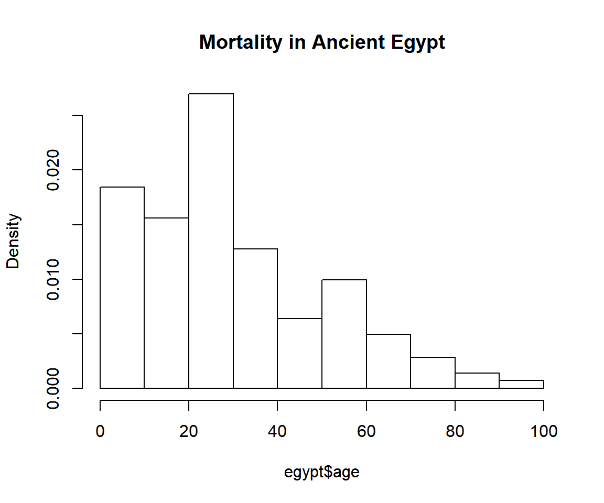
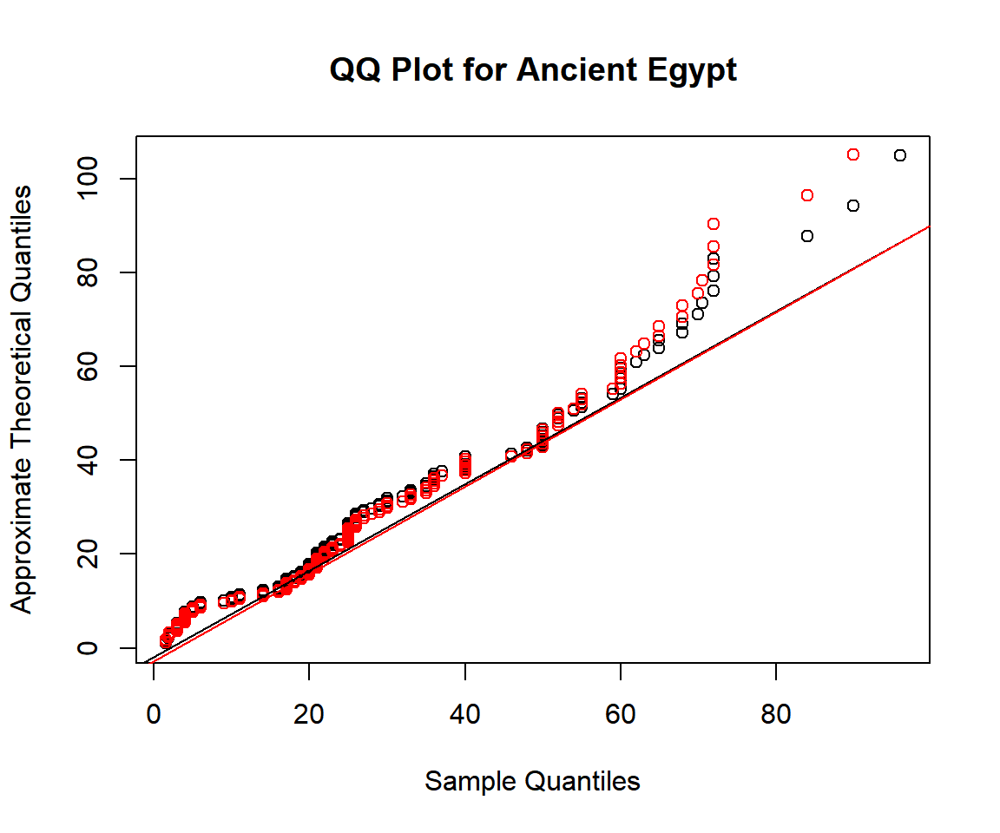
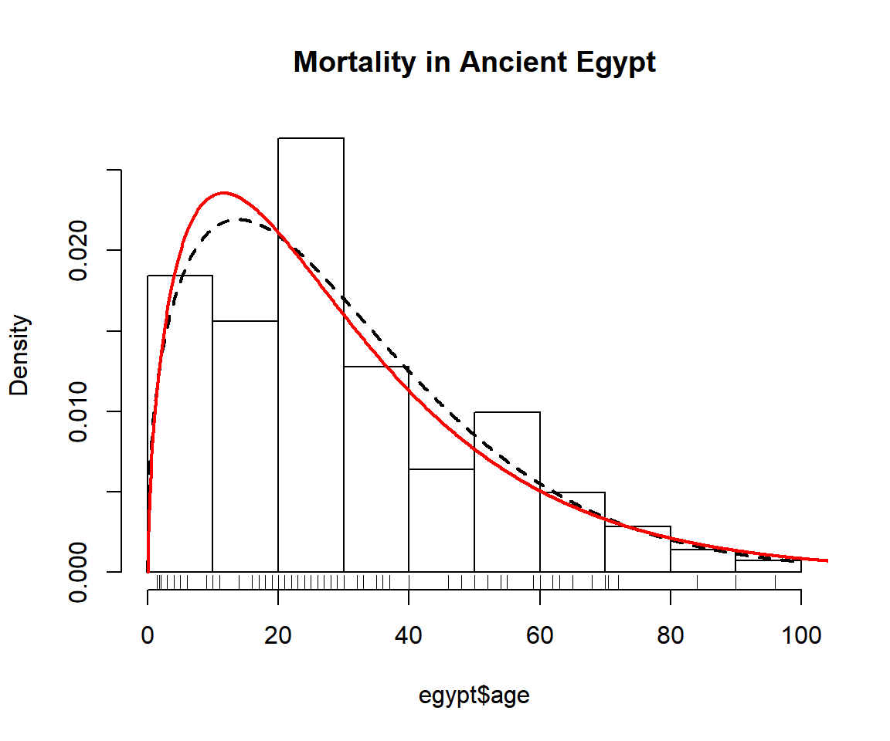
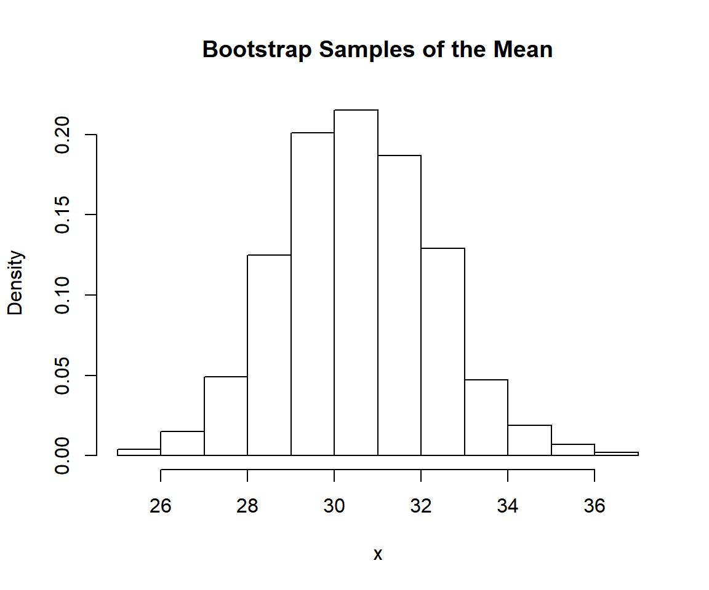

When dealing with univariate data you want to do one or more of * Find a good model for the data. * Estimate parameters for your candidate models. * Get an idea about the uncertainty of your estimates.
The unvariateML package has a fast and reliable functions to help you with these tasks. The core of the package are more than 20 functions for fast and thoroughly tested calculation of maximum likelihood estimates for univariate models.
- Compare the fit of your candidate models with
AICorBIC. - Look at QQ plots or PP plots of your data.
- Plot the data together with density estimates.
- Compute confidence intervals using parametric bootstrap.
This vignette shows you how to use the tools of univariateML to do exploratory data analysis.
Mortality in Ancient Egypt
The dataset egypt contains contains the age at death of 141 Roman era Egyptian mummies. Our first task is to find a univariate model that fits this data.
## age sex
## 1 1.50 male
## 2 1.83 male
## 3 2.00 male
## 4 2.00 male
## 5 3.00 male
## 6 3.00 male
Comparing Many Models with AIC
The AIC is a handy and easy to use model selection tool, as it only depends on the log-likelihood and number of parameters of the models. The generic in R can take multiple models, and the lower the the better.
Since all the data is positive we will only try densities support on the positive half-line.
AIC(mlbetapr(egypt$age),
mlexp(egypt$age),
mlinvgamma(egypt$age),
mlgamma(egypt$age),
mllnorm(egypt$age),
mlrayleigh(egypt$age),
mlinvgauss(egypt$age),
mlweibull(egypt$age),
mlinvweibull(egypt$age),
mllgamma(egypt$age))## df AIC
## mlbetapr(egypt$age) 2 1312.464
## mlexp(egypt$age) 1 1249.553
## mlinvgamma(egypt$age) 2 1322.949
## mlgamma(egypt$age) 2 1234.772
## mllnorm(egypt$age) 2 1263.874
## mlrayleigh(egypt$age) 1 1260.217
## mlinvgauss(egypt$age) 2 1287.124
## mlweibull(egypt$age) 2 1230.229
## mlinvweibull(egypt$age) 2 1319.120
## mllgamma(egypt$age) 2 1314.187The Weibull and Gamma models stand out with an AIC far below the other candidate models.
To see the parameter estimates of mlweibull(egypt$age) just print it:
## Maximum likelihood estimates for the Weibull model
## shape scale
## 1.404 33.564mlweibull(egypt$age) is a univariateML object. For more details about it call summary:
##
## Maximum likelihood for the Weibull model
##
## Call: mlweibull(x = egypt$age)
##
## Estimates:
## shape scale
## 1.404158 33.563564
##
## Data: egypt$age (141 obs.)
## Support: (0, Inf)
## Density: stats::dweibull
## Log-likelihood: -613.1144Quantile-quantile Plots
Now we will investigate how the two models differ with https://en.wikipedia.org/wiki/Q%E2%80%93Q_plot, or Q-Q plots for short.
qqmlplot(egypt$age, mlweibull, datax = TRUE, main = "QQ Plot for Ancient Egypt")
# Can also use qqmlplot(mlweibull(egypt$age), datax = TRUE) directly.
qqmlpoints(egypt$age, mlgamma, datax = TRUE, col = "red")
qqmlline(egypt$age, mlweibull, datax = TRUE)
qqmlline(egypt$age, mlgamma, datax = TRUE, col = "red")
The Q-Q plot shows that neither Weibull nor Gamma fits the data very well.
If you prefer P-P plots to Q-Q plots take a look at ?ppplotml instead.
Plot Densities
Use the plot, lines and points generics to plot the densities.
hist(egypt$age, main = "Mortality in Ancient Egypt", freq = FALSE)
lines(mlweibull(egypt$age), lwd = 2, lty = 2, ylim = c(0, 0.025))
lines(mlgamma(egypt$age), lwd = 2, col = "red")
rug(egypt$age)
Confidence Intervals with Parametric Bootstrap
Now we want to get an idea about the uncertainties of our model parameters. Do do this we can do a parametric bootstrap to calculate confidence intervals using either bootstrapml or confint. While bootstrapml allows you to calculate any functional of the parameters and manipulate them afterwards, confint is restricted to the main parameters of the model.
# Calculate two-sided 95% confidence intervals for the two Gumbel parameters.
bootstrapml(mlweibull(egypt$age)) # same as confint(mlweibull(egypt$age))## 2.5% 97.5%
## shape 1.249535 1.618375
## scale 29.632580 37.961831## 2.5% 97.5%
## shape 1.33668712 2.01079214
## rate 0.04214615 0.06773234These confidence intervals are not directly comparable. That is, the scale parameter in the Weibull model is not directly comparable to the rate parameter in the gamma model. So let us take a look at a a parameter with a familiar interpretation, namely the mean.
The mean of the Weibull distribution with parameters shape and scale is scale*gamma(1 + 1/shape). On the other hand, the mean of the Gamma distribution with parameters shape and rate is shape/rate.
The probs argument can be used to modify the limits of confidence interval. Now we will calculate two 90% confidence intervals for the mean.
# Calculate two-sided 90% confidence intervals for the mean of a Weibull.
bootstrapml(mlweibull(egypt$age),
map = function(x) x[2]*gamma(1 + 1/x[1]),
probs = c(0.05, 0.95))## 5% 95%
## 27.72577 33.71598# Calculate two-sided 90% confidence intervals for the mean of a Gamma.
bootstrapml(mlgamma(egypt$age),
map = function(x) x[1]/x[2],
probs = c(0.05, 0.95))## 5% 95%
## 27.55772 34.15678We are be interested in the quantiles of the underlying distribution, for instance the median:
# Calculate two-sided 90% confidence intervals for the two Gumbel parameters.
bootstrapml(mlweibull(egypt$age),
map = function(x) qweibull(0.5, x[1], x[2]),
probs = c(0.05, 0.95))## 5% 95%
## 22.92392 29.03437## 5% 95%
## 21.89397 27.73286We can also plot the bootstrap samples.
hist(bootstrapml(mlweibull(egypt$age),
map = function(x) x[2]*gamma(1 + 1/x[1]),
reducer = identity),
main = "Bootstrap Samples of the Mean",
xlab = "x",
freq = FALSE)
Density, CDF, quantiles and random variate generation
The functions dml, pml, qml and rml can be used to calculate densities, cumulative probabilities, quantiles, and generate random variables. Here are \(10\) random observations from the most likely distribution of Egyptian mortalities given the Weibull model.
## [1] 25.90552 59.64456 13.36882 44.29378 12.22563 17.66144 54.57633
## [8] 22.86824 11.48328 19.94814Compare the empirical distribution of the random variates to the true cumulative probability.
set.seed(313)
obj = mlweibull(egypt$age)
q = seq(0, max(egypt$age), length.out = 100)
plot(q, pml(q, obj), type = "l", ylab = "Cumulative Probability")
r = rml(100, obj)
lines(ecdf(r))